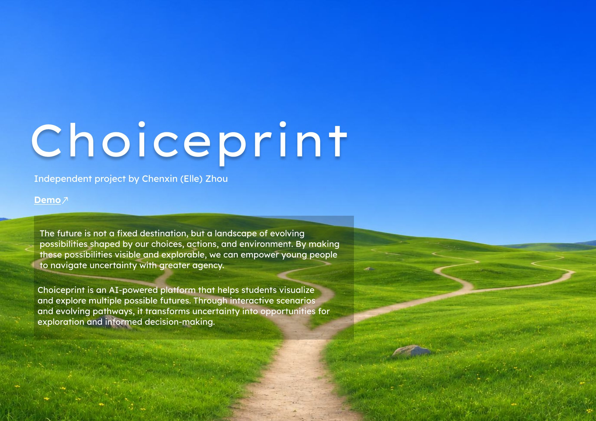
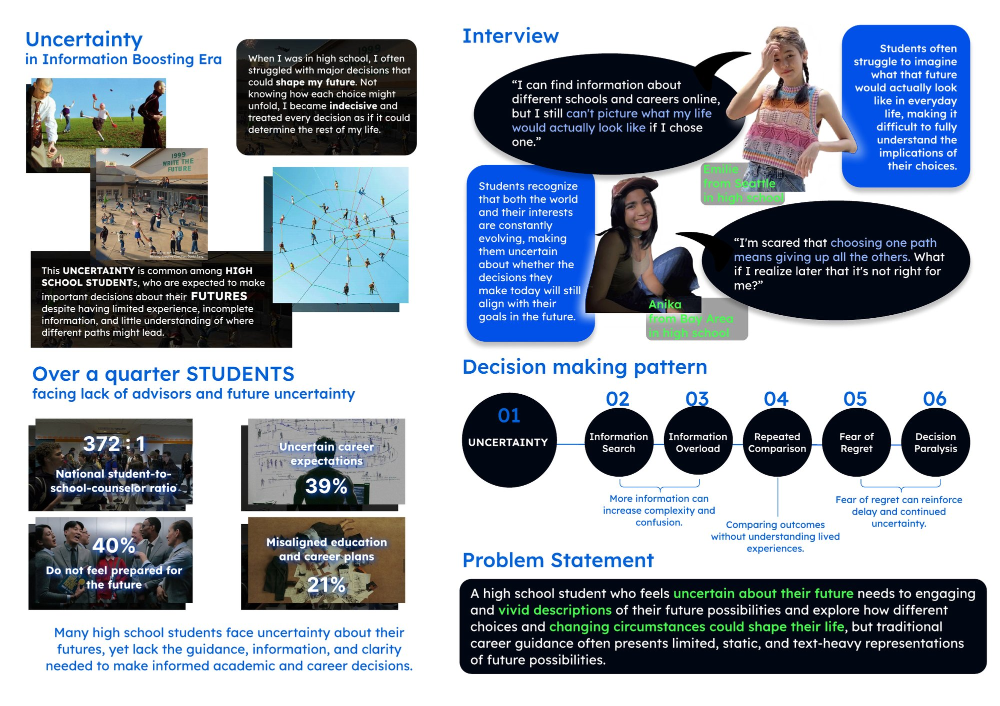
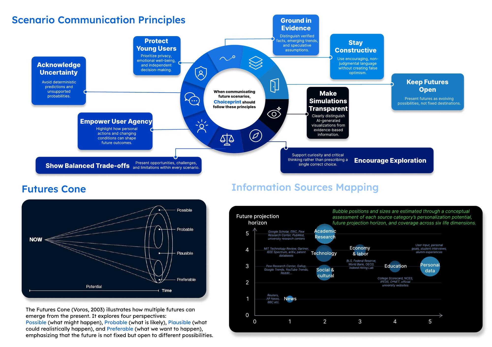
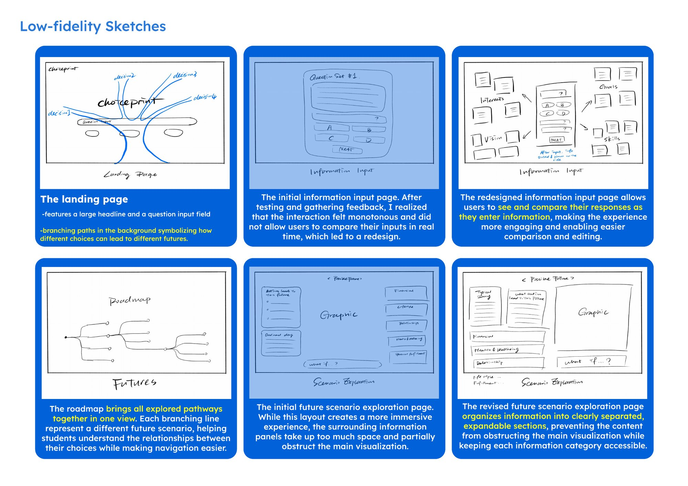
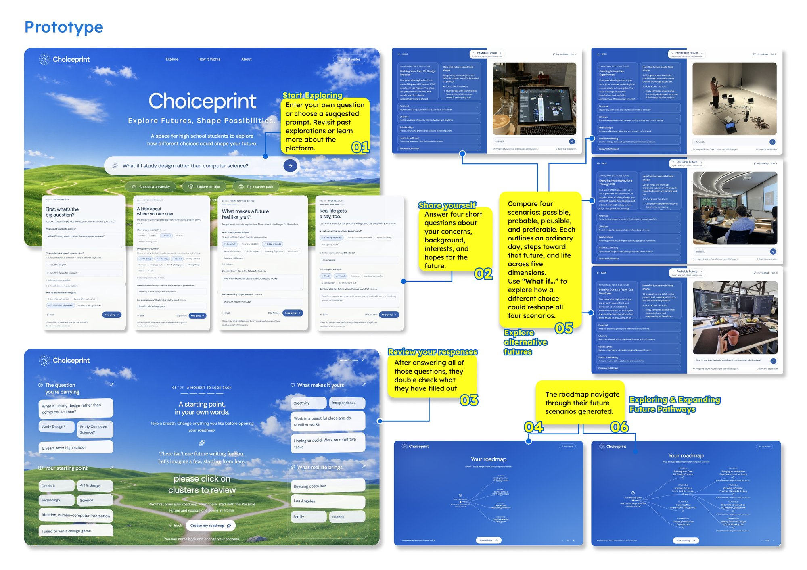
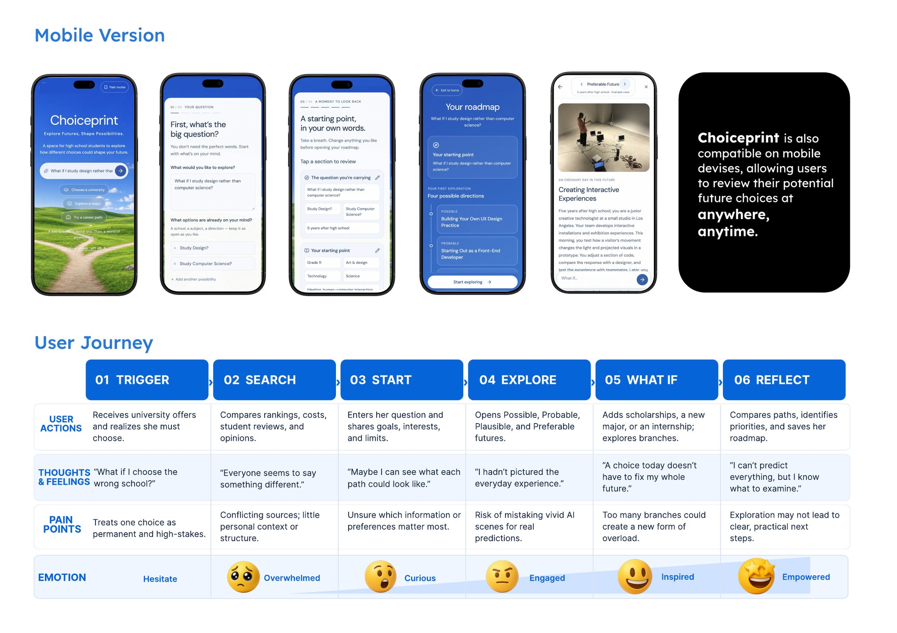

An AI-powered platform that helps high school students visualize and explore multiple possible futures, turning uncertainty into room to explore.
When
September to November 2026
Type
Independent project
My role
Research, concept, UX and UI design, prototyping, and user testing.

01 · Wood 木 · 生
When I was in high school, I often struggled with major decisions that could shape my future. Not knowing how each choice might unfold, I became indecisive and treated every decision as if it could determine the rest of my life.
The future is not a fixed destination, but a landscape of possibilities shaped by our choices, actions, and environment.
02 · Fire 火 · 长
This uncertainty is common. The national student-to-counselor ratio is 372 to 1, and many students feel unprepared for the future. In interviews, students told me they can find information about schools and careers online, but still can’t picture what their life would actually look like. More information often leads to overload, repeated comparison, fear of regret, and finally decision paralysis.

03 · Earth 土 · 化
Traditional career guidance presents futures as limited, static, and text-heavy. I turned to the Futures Cone (Voros, 2003), which frames the future as possible, probable, plausible, and preferable, rather than one fixed path.
Because the platform uses AI to imagine futures for young people, I set principles for how scenarios are communicated: acknowledge uncertainty, avoid deterministic predictions, protect young users, show balanced trade-offs, keep AI-generated visuals clearly separate from evidence, and empower user agency.

04 · Metal 金 · 收
Testing the low-fidelity flow changed two key screens. The first input page felt monotonous, so I redesigned it to let students see and compare their answers as they type. The first exploration page was immersive, but its side panels covered the visualization, so I reorganized the information into separate, expandable sections.

Students ask a question about their future, share their concerns, background, interests, and hopes, then explore four scenarios. Each one shows an ordinary day, the steps toward that future, and life across five dimensions. A “What if…” feature lets them see how a different choice could reshape every path, and a roadmap brings all their explorations together.


05 · Water 水 · 藏
Does opening up more possibilities really reduce overwhelm?
High school students who tried Choiceprint said it helped them realize how many paths their life could take. But it didn’t always help them decide on one. Showing more futures can be freeing, and it can also become a new kind of overload.
Next, I want to add a conversation with AI alongside the current interface, one that helps students narrow their possibilities step by step, rather than only expanding them.